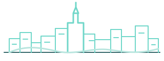

BILBAO · CASCO VIEJO · INVESTIGACIÓN ABIERTA
Cargando datos locales…

Bar CrawlOptimizer
EXPERIMENTO DE OPTIMIZACIÓN DE RUTAS
¿Cuál es la ruta más rápida para visitar
¿Cuál es la ruta más rápida para visitar
todos los bares del Casco Viejo de Bilbao?
Rutas peatonales reales · Comparativa de algoritmos · Simulación y animación

MAPA DE LA INVESTIGACIÓN157 puntos · red peatonal real
ANIMAR RECORRIDORuta peatonal
InicioFin del recorrido
Preparado para animar
establecimientos perímetro de estudio